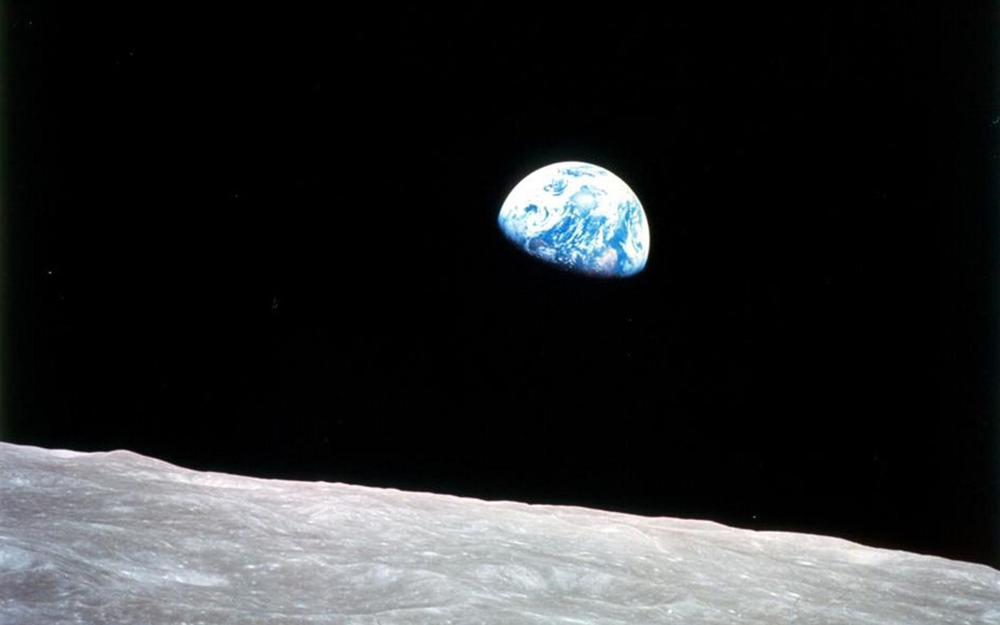
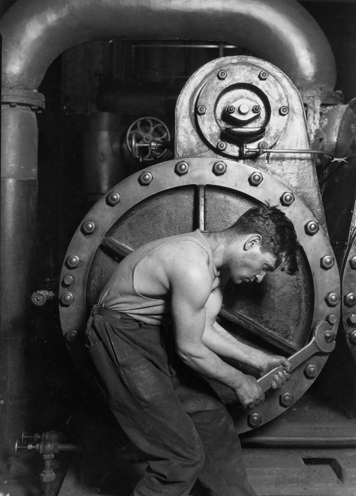
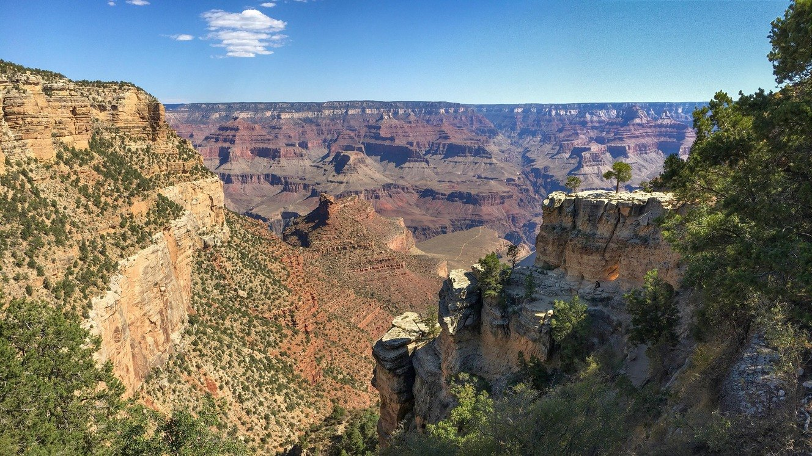
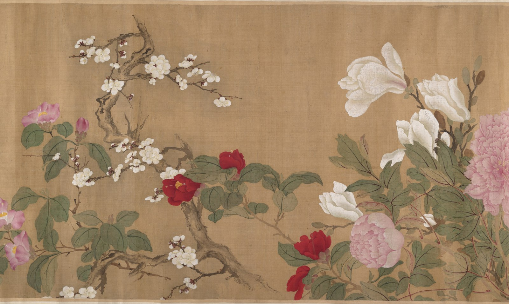
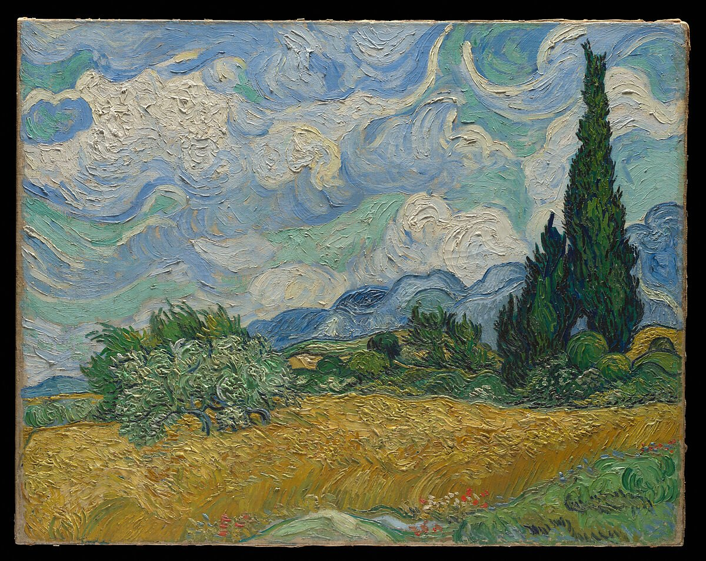
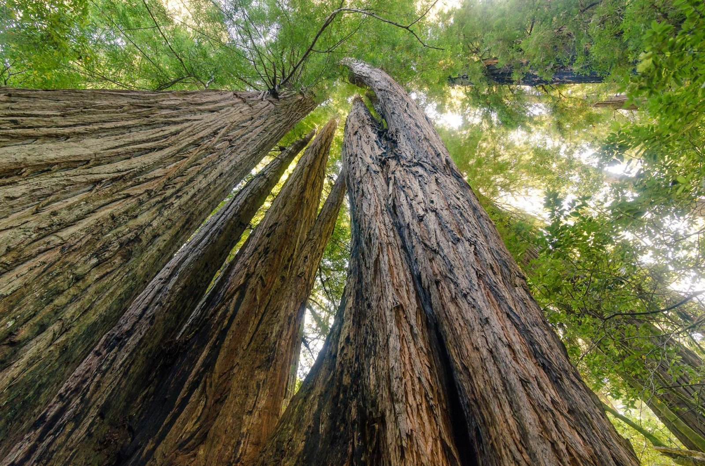

自然生物属性 / 人与自然
在机器面前，
先看见身体。
人需要空气、水与食物，身体有耐受的范围。无论制度和观念怎样改变，生命活动始终依赖自然。沿着劳动中的身体追问，历史会走向它依赖的生态条件。
但食物从哪里来、由谁生产、怎样分配，已经进入社会历史。沿着一口饭追下去，身体的需要会带我们走向土地、劳动、技术与人与人的关系。
人怎样维持生命，又怎样改变维持生命的自然条件？


三个观察维度
每一次呼吸，都与更古老的世界相连。
在我们到来之前，生命的条件已经形成。
而我们创造的世界，正在改变这些条件。
一种历史思考的转向
吃、喝、劳动、照料、感受。人的生命，一直在历史之中。
王利华把“生命”带到历史思考的中心：怎样维持生活，怎样组织共同的世界，怎样让一个人的身体、经历与意义追求，一起进入我们的解释。
“生命实在”是最根本的历史实在。
王利华 ·《以生命为中心进行历史思考》
自然生物、社会文化与个体生活，在同一个人的生命过程中交汇。制度、事件和观念，也因此联系到人的需求、实践、体验与意义。
这份构想沿着几组问题展开：人有怎样的生命属性？我们在什么时间尺度观察他？又应当追踪他与世界的哪些联系？
01 / 生命的关系
一只手。一个工具。
一种生活的组织。
02 / 三种时间
一个人的一生，
发生在比自己古老的世界里。

地球的条件进入社会，社会的安排进入一生。行动又沿着这些联系，改变共同的世界。
03 / 把关系放回一片土地
黄河三角洲，
同一个区域的两个时刻。
NASA Earth Observatory / Lauren Dauphin · USGS Landsat
两幅影像拍摄于不同季节；绿度变化也包含季节影响。
改变一条水道，也会改变泥沙、海岸与生活机会的联系。沿着这些联系，人与自然、人与人、人与技术的关系，进入同一段历史。
04 / 思想的来路
01 / 生生之道

王利华从“生生”思想中提取整体性、连续性、创造性和价值性的资源：人生活在天地万物之中，生命相续的过程，也不断产生新的关系与可能。
生命彼此联系，个人的出生与死亡，又发生在更大的生命延续之中。人类实践在这个过程中创造新的形式、结构与可能。
继承这条思想，也需要检视传统怎样束缚生命。作者明确触及等级观念、对女性的压抑等问题，将生命关怀与对传统的历史反思放在一起。
02 / 马克思的启示

吃、喝、住、穿等需要，与满足需要的物质生活生产相联系。主文本借助马克思，把现实的个人及其生命活动放到历史思考的起点。
生产活动使自然需求进入社会历史。人与自然的交往，也在具体的社会关系中展开：怎样劳动、怎样依赖别人、怎样创造共同的生活。
作者由此把异化、人的发展，以及人与自然和人与人的双重和解，联系到生命关怀的价值方向。
03 / 生态文明

主文本将生态文明建设思想作为价值资源，把人、其他生命与生态系统联系到共同存续的自然基础。
人与自然的和谐共生，需要沿着实际的利用、保护和生活实践展开考察。生态危机、社会冲突与个体困境，怎样在时间中形成？哪些关系失衡，又怎样被改变？
04 / 跨学科对话
医疗社会史和日常生活史，把身体、健康与具体生活带进研究；环境史与行星史把人放回生态和地球系统；大史、深史又把观察伸向更漫长的生命与人类历程。
考古学、遗传学、人类学等知识，帮助观察生物属性与文化行为的共同演化。不同研究路径，使生命在不同尺度上显现。
扩大视野之后，仍要走回具体的人。宏观叙事怎样容纳个人体验？更深的过去怎样与可得的材料相接？自然条件怎样与社会复杂性、文化能动性一起进入解释？
思想现场 / 王利华与沃斯特 · 2023
王利华
人的身体无法摆脱生物条件，文化却不断扩展改造自然的能力。理解环境问题，需要反思文化的偏差与误用。
唐纳德·沃斯特
对文化差异的强调，会不会遮住食物、繁衍等共同的生物需要？环境史需要重新面对这些基本驱动力。
从共同的需要出发，又怎样解释文化、制度和生活机会的差异？
05 / 工具进入内在世界
什么可以交给工具？
什么仍需自己判断？
王利华在文章结尾写到：智能体帮助他研究和制作，信息推送与工具依赖，又在改变他的沉思时间与能力。
自己已经被先进的通讯工具技术剥夺了沉思的自由和能力。
王利华 · 文章结尾的当下经验
在2025年的南开大学讲座中，他也把 AI 的作用和人的主体性放在一起讨论。工具延伸了能力，人的知识、沉思与自主判断，也继续参与同一段生活。
技术由此贯穿身体、共同生活和内在世界。便利与依赖，同时成为生命史可以追问的问题。
06 / 让生命关怀进入研究
食物、身体、知识、组织。
生命关怀，在具体过程中展开。
一件小事，四条研究路径
点亮一条联系01 / 生命支撑系统
从食物、水、空气与能源出发，追踪生活所需的取得与维持。土地、生计劳动与运输，把物质、能量和信息联系到日常生活。
02 / 生命防卫系统
医疗、护理、公共卫生与防疫，使生命保护进入群体生活。知识和制度怎样形成，谁能获得照料，哪些身体仍然暴露在风险之中？
03 / 生态认知系统
什么被认作资源、营养或风险？经验、感知与知识的形成和传播，影响人们理解环境、组织实践和作出日常选择。
04 / 生态—社会互组织
自然条件与社会组织，在聚居、生产和制度安排中相遇。社会怎样因应自然秩序，又怎样改变这些条件？
起点 / 01
支撑食物怎样从土地进入餐桌？需要追踪作物、土壤与水，也要追踪劳动、运输和获得食物的机会。
防卫怎样判断食物是否安全？保护健康的知识、检验和社会制度，怎样进入生产与消费？
认知什么被认作可食、营养或有害？这些认识由谁提出，怎样传播，又怎样进入日常选择？
互组织围绕土地和水，人们怎样安排生产、聚居与分配？遇到短缺时，谁可以改变安排，谁承担代价？
起点 / 02
支撑患病期间，食物、饮水、居住与照料怎样得到保障？生活条件如何影响疾病中的人？
防卫谁提供治疗和护理，谁能获得它们？医疗与防疫安排怎样形成，又怎样改变生命的安全？
认知人们怎样解释病因、识别风险？经验与医学知识如何相遇，什么认识被接受或拒绝？
互组织应对疾病的安排怎样改变家庭、劳动和公共生活？这些变化又怎样影响人的健康条件？
起点 / 03
支撑让信息抵达屏幕，需要怎样的设备、能源与物质条件？这些条件由谁维持，又消耗什么？
防卫持续连接怎样影响休息、身体与心理健康？人们如何认识这些影响，又建立哪些保护方式？
认知环境信息怎样被筛选和呈现？什么被看见，什么被忽略，怎样影响人对风险和资源的认识？
互组织平台规则、技术与使用习惯怎样组织注意力？谁能决定信息怎样抵达，使用者又怎样调整自己的生活？
这些问题，等待具体的人、地方与历史行动来回答。